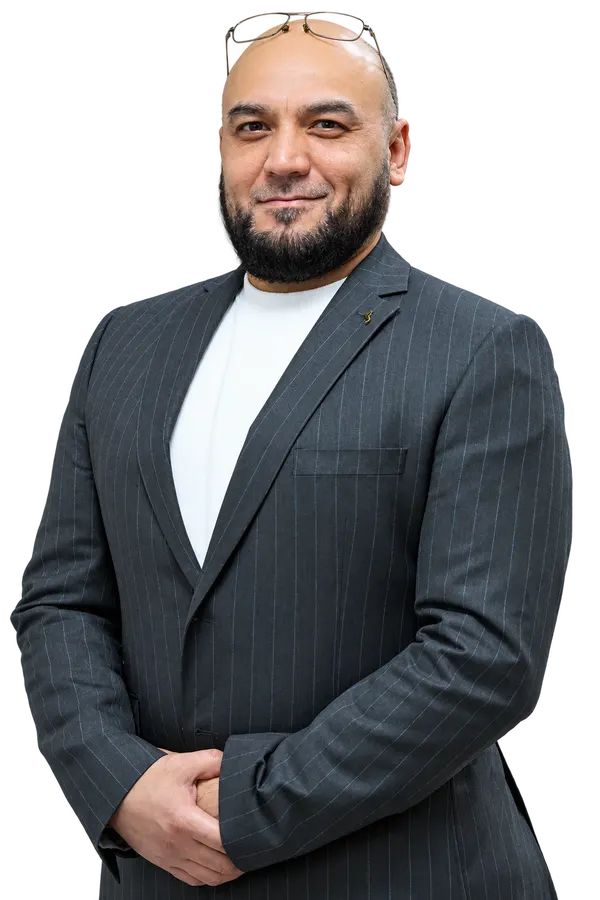

Корпоративные сети, мониторинг, серверная инфраструктура и поддержка
ИТ-РУКОВОДСТВО · ИНФРАСТРУКТУРА · ИНТЕГРАЦИЯ
Akbar Abdullaev
Руководитель ИТ-отдела
Инфраструктура · ИТ-эксплуатация · Интеграция систем
Более 20 лет в ИТ: инфраструктура, эксплуатация и интеграция систем. Руководство ИТ-отделом AkfaMedline–VohaMedline, поддержка около 300 сотрудников одной шестэтажной клиники.
5человек в ИТ-команде
4 прямых подчинённых
4 прямых подчинённых
~300сотрудников на поддержке
1шестэтажная клиника

ОБО МНЕ
Создаю надёжную ИТ-основу
Руководитель ИТ с более чем 20-летним практическим опытом в сетях, корпоративных системах, разработке и ИТ-эксплуатации. Сосредоточен на надёжности сервисов и решениях, улучшающих реальные рабочие процессы.
Подход: инженерная компетентность, ответственность за результат, прагматичная интеграция и совместная работа с подразделениями.
Связь существующих и новых информационных систем, отчётность и процессы
Управление ИТ-отделом из пяти человек; четыре прямых подчинённых
Python, API и внутренние инструменты для оптимизации повторяющихся задач
КАРЬЕРА
Профессиональный путь
Ключевые этапы карьеры. Ранние роли доступны в раскрывающемся списке.
Руководитель ИТ-отдела
AkfaMedline–VohaMedline
- Руководство командой из пяти человек, включая четырёх непосредственных подчинённых.
- ИТ-поддержка около 300 сотрудников одной шестэтажной клиники.
- Эксплуатация корпоративных сетей, физических и виртуальных серверов, телефонии, CCTV и информационных систем MIS/RIS/LIS/HRM.
- Координация интеграции, автоматизации и непрерывности ИТ-сервисов.
3D-моделлер и ИТ-специалист
PROEKTPRO
- Поддержка рабочих мест, локальных сетей, веб-сайта организации и архитектурной 3D-визуализации.
Технический директор
Alfitextile
- Администрирование баз данных, серверов, систем штрихкодирования и веб-сайтов.
Ранние должности и самостоятельная практика (1999–2019)
- 2018–2019 — ИТ-специалист · Me’mor Architecture Service
- 2013–2017 — веб-разработчик и администратор БД (фриланс)
- 2012–2013 — ИТ-инженер · MONBLAN LLC
- 2009–2012 — частная ИТ-практика; 2009 — VIA Karavan Studio
- 2004–2007 — технические и ИТ-роли в образовании, логистике и интернет-проектах
- 1999–2000 — инженер автоматизированных систем и ИТ-поддержка
ЭКСПЕРТИЗА
Ключевые компетенции
ИТ-руководство
Управление командой и сервисами, взаимодействие с подразделениями, технические решения.
Инфраструктура и сети
Windows Server, Active Directory, Aruba, виртуализация и администрирование рабочих мест.
Интеграция систем
MIS, RIS, LIS, HRM, интерфейсы API, модели и потоки данных.
Автоматизация и разработка
Python, FastAPI, SQL, PostgreSQL, MySQL, React и внутренние инструменты.
Мониторинг и надёжность
Zabbix, Grafana, сетевые диагностики, CCTV, IP-телефония, анализ сбоев.
Корпоративные технологии
Преобразование рабочих задач в устойчивые цифровые процессы.
ПОДГОТОВКА
Образование и развитие
Обучение
Python Full Stack Web Developer — SkillFactory, 2023
Администрирование веб-сайтов — LAUR, 2005
Обслуживание IBM PC — LAUR, 2004
3Ds Max — LAUR, 2004
Оператор ПК — Istiqlol Business School, 1999
Ташкентское высшее военно-пограничное училище — обучение не завершено (2004)
Языки
Узбекский — родной
Русский — свободно
Английский — B1
Турецкий — B1
Фарси — B1
СВЯЗЬ
Контакты
По вопросам руководства ИТ, инфраструктуры и интеграции корпоративных систем.